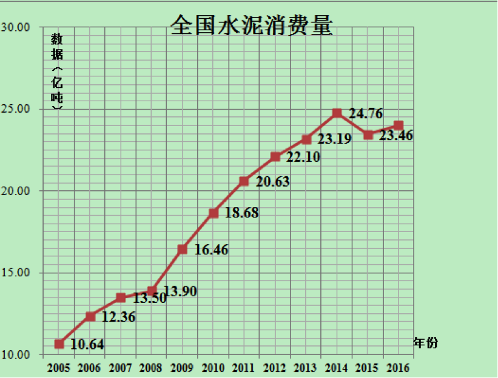
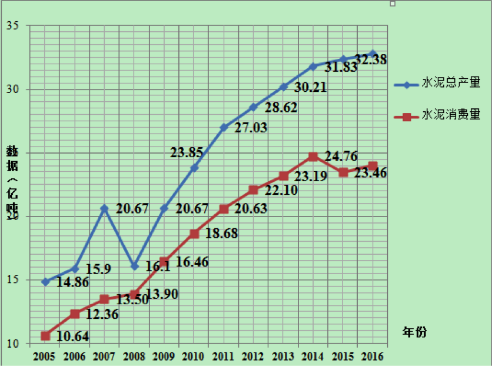
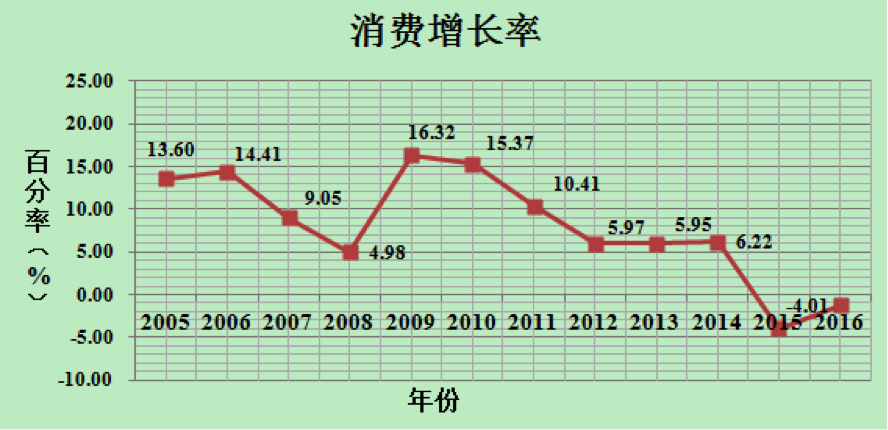
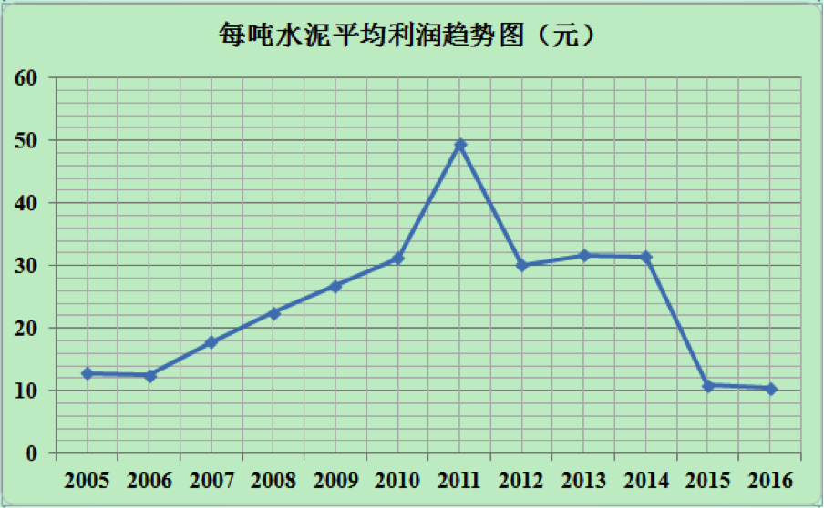
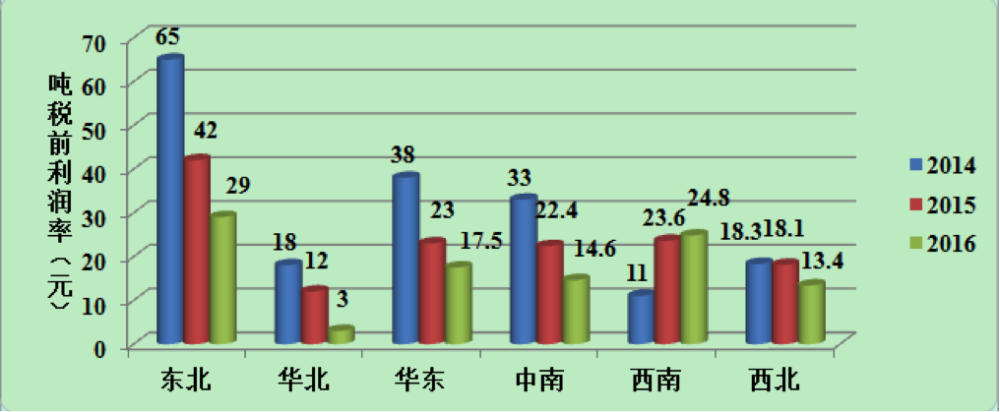

注：本篇章内容为水泥的发展描述。
水泥是一种既能在空气中硬化又能在水中硬化的无机胶凝材料，具有强度高、 耐久性优良的特性，是国民经济发展、生产建设和人民生活不可缺少的基础原材料。随着经济的飞速发展，我国水泥产量连续20多年居世界首位，年水泥消费量占世界总量60%以上。
水泥行业对大气环境的污染十分严重。据环保部门相关统计数据显示，水泥工业颗粒物排放量占全国排放总量的15%~20%，粉尘排放量占全国排放总量的30%以上，氮氧化物排放量约占全国排放总量的10%~12%，大气汞排放量占全国排放总量的14%，对雾霾天气的形成有着直接的影响。同时，作为资源密集型产业，我国传统水泥生产过程中能源与矿石资源消耗量极大。这使我国水泥工业的发展受到资源不足、环境污染的严重制约
发展低碳经济和绿色环保工业是目前国际上的普遍共识，建设环境友好型、资源节约型企业是我国水泥工业发展的重要课题。大力发展绿色水泥产业是促进我国水泥产业结构调整和技术升级，实现可持续发展的必由之路。
所谓绿色水泥，是指在水泥生产过程中，采用新的生产工艺，回收利用废弃材料，降低熟料比重，从而大幅度降低C02排放，并利用一切可行的技术来降低水泥生产的单位能耗。具有上述特征的水泥均可成为绿色水泥。目前，主要的绿色水泥产品有高贝利特水泥、无熟料水泥和生态水泥。
注：本篇章内容为水泥的国内市场。
作为传统水泥产品的升级替代产品，绿色水泥的市场前景与水泥工业整体发展环境息息相关，本文首先从传统水泥进行分析，进而得出绿色水泥产业的发展前景预测。由于水泥是一种不宜长途运输且不宜长时间储存的物资，其市场拓展受销售半径的限制，各大水泥生产企业的产品大部分在当地市场销售，因此可以认为：某地区的水泥产量，基本反映了当地水泥消费量的大小。我国共有水泥生产厂家5000余家，水泥总产量连20 多年居世界第一位。从全国范围来看，水泥主要消费市场可以分为六大板块，分别是：东北市场、西北市场、华北市场、华南市场、中南市场、西南市场，
【我国水泥市场区域划分】
注：本篇章内容为水泥的产业链解析。
产业链上游分析
生产工艺
水泥生产过程分为三个阶段，第一阶段为生料加工，即将石灰石（约占75%~85%）、粘土、矽砂、铁矿四种原料按一定比例混合、研磨，形成粉状生料；第二阶段为熟料加工阶段，即将生料置于1500度左右的高温窑中锻烧至部分熔融，得到以硅酸钙为主要成分的水泥熟料；第三阶段为水泥加工阶段，即在熟料加入适量的石膏和其它混合材料，研磨为细粉状水泥成品。相对于传统水泥，绿色水泥的生产流程差别不大，仅在某些具体工艺方面存在一定改良。
（1）生态水泥的生产流程
第一步：原料粉碎及预处理
分选除去原料中的铁与有色金属，并粉碎成20mm以下的颗粒。将焚烧灰仓放出的焚烧灰与石灰石以及其他辅助原料经原料粉碎机粉碎后，分别送人混合料仓、石灰石粉仓以及其他辅助原料粉仓。小于设定粉末度的焚烧灰，不通过原料粉碎机及预处理装置，直接送入混合仓；
第二步：配料
将焚烧灰、石灰石按设定比例投人混合料仓，在设定时间内搅拌混合后取样分析。根据分析结果决定辅助原料的添加量。辅助原料投人混合料仓混合后再分析，直至达到设计值为止。
水泥熟料添加氯化物，如氯化钙，混合研磨制成快硬性生态水泥。添加氯、碱等化合物，如碱金属化合物碳酸钠，混合研磨制成通用性生态水泥；
第三步：烧成
在700~800℃的温度下熔融形成水泥矿物，严格控制烧成温度以保证安全运行和产品优质化。焚烧灰中的二恶英，在旋转窑炉内1350℃高温烧成中分解、无害化；排气经冷却塔由700~800℃急冷至200℃以下，防止了二恶英再合成；
第四步：产品粉碎
在烧成的熟料中添加石膏，并送至粉碎机粉磨制成生态水泥，回收窑灰中的金属。
（2）高贝利特水泥的生产流程
普通碳酸盐水泥熟料以硅酸三钙为主导组成矿物，而高贝利特水泥则以硅酸二钙为主导组成矿物。在加工工艺方面，主要有以下改进：
将烧成温度降低了100度，从而节约煤资源；
使用石膏、重晶石、黄铁矿、芒硝、重晶石尾矿、铜尾矿、铅锌尾矿、稀土金属尾矿中的任意一种或几种的组合作为烧成外加剂，稳定C2S晶形、提高C2S水化活性；
出磨生料经充分均化后再送入高温窑窑煅烧，生料入窑前要对其均匀性进行检验，要求水泥生料的碳酸钙滴定值TCaCO3的平均波动偏差小于0.15%；
煅烧温度范围在1300～1400℃，比传统水泥熟料煅烧低100～150℃。
（3）无熟料水泥的生产流程
无熟料水泥一般指不需经过煅烧工艺而制成的水硬性水泥。无熟料水泥生产工艺简单，是对工业废渣或副产品和天然资源很好的综合利用。其主要加工方法为，将粒化高炉矿渣、粉煤灰、煤矸石等混合材料和碱性激发剂（如石灰、硅酸盐水泥熟料）或硫酸盐激发剂（如石膏）按适当比例配合，共同磨细而成。无熟料水泥一般以它所采用的原料来命名，如石膏矿渣水泥、石灰矿渣水泥、石灰火山灰质水泥等。
主要影响因素
水泥行业主要为下游产业提供原料，下游行业发展快，则对水泥的需求量就大，从而带动水泥业高速发展；反之则对水泥业发展带来消极影响。水泥产业的下游需求主要来自于基础设施建设投资和房地产投资，这两项带来的水泥需求量分别占我国水泥消耗总量的30%和40%以上。

（1）房地产投资对水泥行业的影响
对水泥需求量最大的是房地产行业。房地产行业年水泥消耗量占总量的40%左右，水泥行业的发展形势，很大程度上直接由房地产行业的兴衰决定。房地产投资上涨能够拉动水泥产业的需求增长， 有利于水泥产业扩大产能，提高产量。从2014年到现在，受国家房地产调控政策影响，我国的房地产投资增速正在呈现较大幅度的下降。目前国内商品房库存依然居高不下，尽管2016年下半年以来，房市在成交价格和成交数量上有所好转，但从整体上来看，政府正在通过政策实现房地产的去库存化，短期内不会出台刺激政策带动投资资本进入房地产市场，房地产开发投资在未来一段时期内依然保持较低增速，对建筑水泥需求难以大幅度释放。
（2）基础设施建设投资对水泥行业的影响
我国水泥产量的变化趋势与基础设时间建设投资额的变化趋势基本一致。虽然2014年我国基础设施建设投资依然保持较高的增长速度，但水泥消费量依然下滑，这说明基础设施的投资主要起到支撑现有水泥需求总量的作用，不足以拉动水泥产业行情回升。未来几年，我国的高速公路、铁路、水利等基础建设领域投资逐步减少，这将对我国水泥行业的前景带来不利影响。
注：本篇章内容为前景描述。
我国经济结构正在处于转型期，过去以固定资产投资拉动经济增长的模式继续发生着改变。2015年和2016年水泥需求下游行业中房地产和基建整体表现乏力，尤其是房地产投资增速出现明显下滑，进入“去库存”阶段，直接导致了我国水泥需求总量的大幅减少。




注：本篇章内容为水泥的政策。
2016年5月5日国务院办公厅印发《关于促进建材工业稳增长调结构增效益的指导意见》（以下简称“意见”），就今后一段时期化解水泥、平板玻璃行业过剩产能，推进供给侧结构性改革，促进工业稳增长和建设制造强国作出具体部署。这是国务院近二十年来首次为建材工业独立出台的一份指导意见。《意见》提出目标任务：到2020年，水泥熟料、平板玻璃产量排名前10家企业的生产集中度达60%左右。同时，《意见》在压减过剩产能、加快转型升级、促进降本增效、完善支持政策四个方面提出了具体的指导意见。
（1）鼓励类。利用现有2000吨/日及以上新型干法水泥窑炉处置工业废弃物、城市污泥和生活垃圾，纯低温余热发电；粉磨系统等节能改造；
（2）限制类。2000吨/日以下熟料新型干法水泥生产线，60万吨/年以下水泥粉磨站；
（3）淘汰类。窑径3米及以上水泥机立窑（2012年）、干法中空窑（生产高铝水泥、硫铝酸盐水泥等特种水泥除外）、立波尔窑、湿法窑；直径3米以下的水泥粉磨设备；无复膜塑编水泥包装袋生产线；使用非耐碱玻纤或非低碱水泥生产的玻纤增强水泥（GRC）空心条板。
目前，全国各省（自治区、直辖市）均已出台水泥去产能政策，包括《大气污染防治专项行动方案》、《水泥工业结构调整方案》等。其中江苏省、河南省、山东省、湖北省、广东省、四川省、河北省等水泥大省在水泥方面去产能力度较大。各地水泥去产能的措施主要包括：（1）严禁新增水泥产能；（2）多渠道化解过剩产能；（3）按市场化原则法治化原则（安全、环保、技术等标准）淘汰落后产能；（4）主动压减过剩产能；（5）推动企业兼并重组；（6）加强国际合作，转移和化解部分产能；（7）提高技术水平，实行水泥企业脱硝除尘改造；（8）坚持水泥错峰生产常态化；（9）清理一批“僵尸企业”。各省市相关举措如下：
湖北：淘汰水泥行业落后和过剩产能265.7万吨
湖南：停止补贴和保护水泥等“僵尸企业”
河南：水泥熟料产能控制在1亿吨以内,压缩水泥粉磨产能3000万吨以上
江西：2017年将水泥产量控制在1.1亿吨至1.2亿吨
河北：2016年水泥行业将淘汰水泥产能200万吨，到2020年，水泥产能将控制在2亿吨左右
北京：2017年将北京市水泥产能控制在400万吨
天津：水泥产量将控制在500万吨以内
山西：预计淘汰落后水泥产能118.8万吨，水泥等新增产能项目将不再审批
内蒙古：2017年底前淘汰水泥落后产能459万吨
山东：2016—2018年力争水泥行业产能利用率回升至80%以上
江苏：2017年将压缩水泥产能1000万吨以上
安徽：“十二五”期间，累积淘汰水泥（熟料及磨机）2212万吨
浙江：2017年熟料水泥产能压减800万吨
福建：推动水泥等传统行业低端低效产能转型升级
上海：水泥行业基本完成了去产能的目标
广东：计划2018年将水泥熟料产能控制在1.1亿吨以内
广西：基本完成落后水泥产能淘汰工作
海南：2017年底化解200万吨水泥粉磨过剩产能
宁夏：两年内将淘汰水泥等产能500万吨
新疆：鼓励优势水泥企业以多种方式“走出去”，积极开拓国外市场
青海：现有16户企业整合重组形成5户大型企业，产业集中度提高到90%以上
陕西：运用差别电价、阶梯电价、生产许可证等手段，推动水泥落后产能按期淘汰
甘肃：水泥产能发挥率力争达到80%以上，产能集中度达到85%以上
四川：打造3—5家产能上千万吨的特大型水泥企业
云南：到2020年力争实现水泥熟料总产能控制在8600万吨以内
贵州：全面禁止在城市规划区新建改建扩建水泥等大气污染严重的产业项目
西藏：新建5条共计300万吨产能新型水泥生产线
重庆：2018年水泥等行业产能过剩或将得到化解
辽宁：五大举措助力辽宁水泥行业“突围”
吉林：工信部批复吉林省开展压减水泥过剩产能加快行业脱困转型发展
黑龙江：东北4000万吨产能停窑4个月
注：本篇章内容为水泥的环境影响评估。
水泥行业对大气环境的污染十分严重，水泥生产中，原料的采掘、均化、粉磨，熟料的煅烧，水泥的粉磨、包装，每个生产环节都会有颗粒物、二氧化硫、氮氧化物、氟化物、污水等污染物的产生和排放；而处理加工这些物料，使用大型的破碎设备、粉碎设备，以及风机、空压机、电动机等，都产生噪声污染。因此，颗粒物、噪声、二氧化硫、氮氧化物是水泥工业主要的污染因子。据环保部门相关统计数据显示，水泥工业颗粒物排放量占全国排放总量的15%~20%，粉尘排放量占全国排放总量的30%以上，氮氧化物排放量约占全国排放总量的10%~12%，大气汞排放量占全国排放总量的14%，对雾霾天气的形成有着直接的影响。大力发展对环境影响较小的绿色水泥产业，是水泥行业的主要趋势。
注：本篇章内容为国内著名企业。
【熟料产能1000万吨以上】
<%----%>
<%--| 排名 | 企业名称 | 总部所在地区 |
|---|
--%>
<%----%>
| 1 | 南方水泥 | 华东（浙江） |
| 2 | 华润水泥 | 中南（广东） |
| 3 | 中材集团 | 华北（北京） |
| 4 | 冀东水泥 | 华北（河北） |
| 5 | 山水集团 | 华东（山东） |
| 6 | 华新水泥 | 中南（湖北） |
| 7 | 红狮集团 | 华东（浙江） |
| 8 | 天瑞集团 | 中南（河南） |
| 9 | 西南水泥 | 西南（四川） |
| 10 | 亚泰集团 | 东北（吉林） |
| 11 | 北方水泥 | 华北（北京） |
| 12 | 江西万年青 | 华东（江西） |
| 13 | 河南同力 | 中南（河南） |
| 14 | 内蒙古蒙西高新技术集团公司 | 华北（内蒙） |
| 15 | 尧柏特种水泥集团有限公司 | 西北（陕西） |
| 16 | 江苏金峰水泥集团有限公司 | 华东（江苏） |